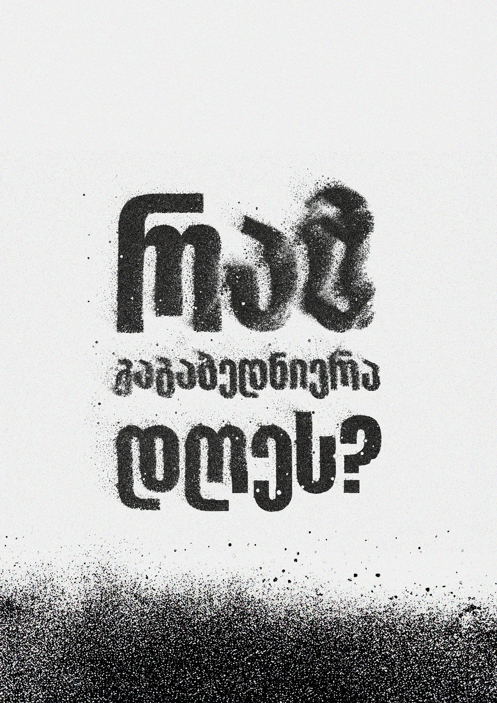
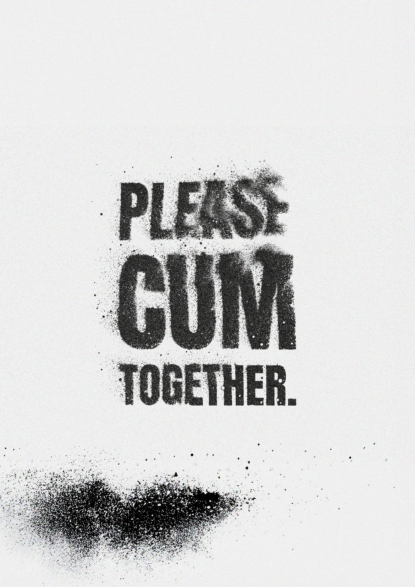
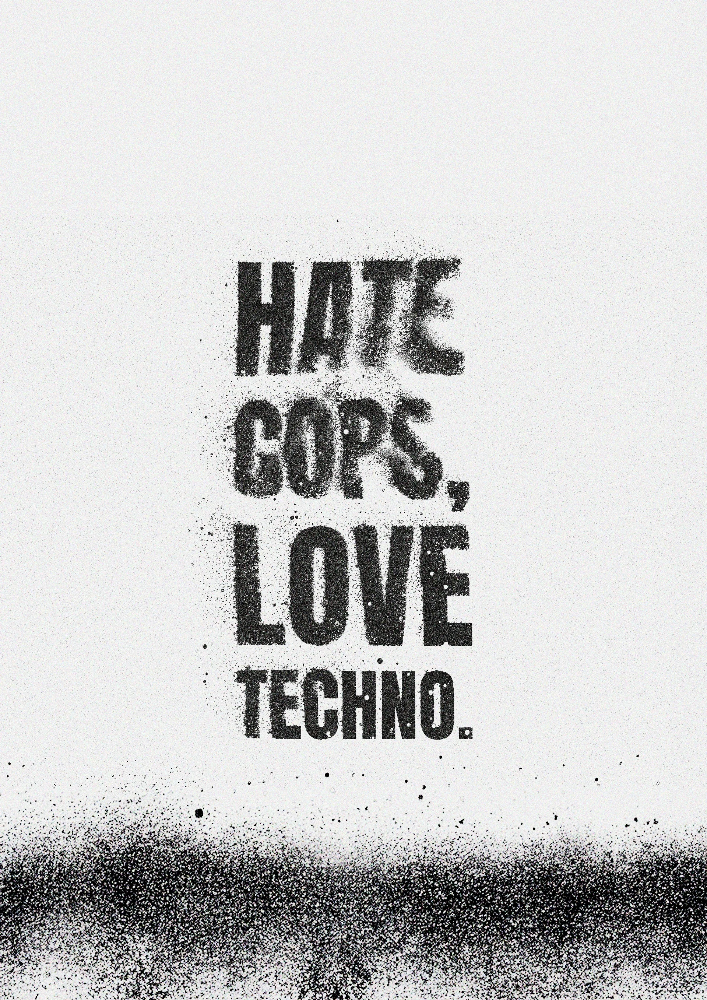
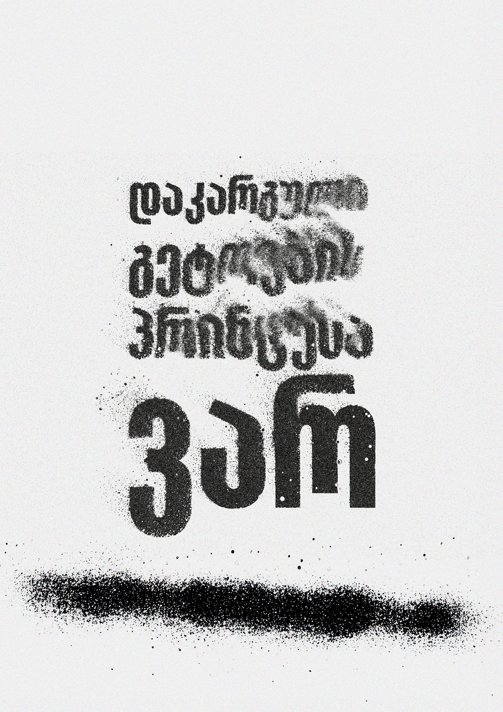
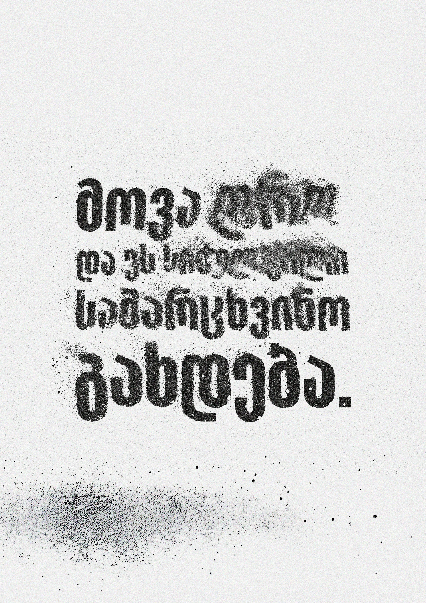
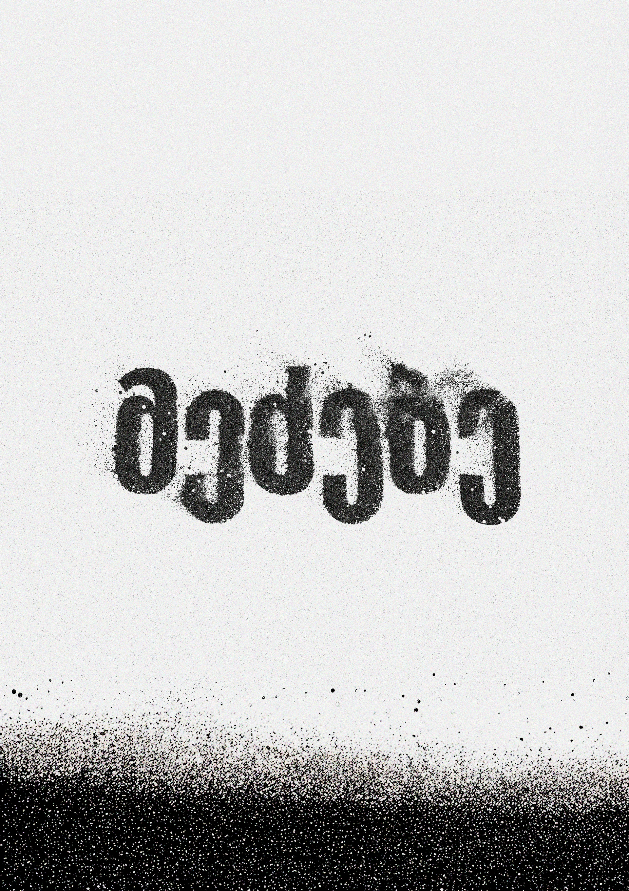
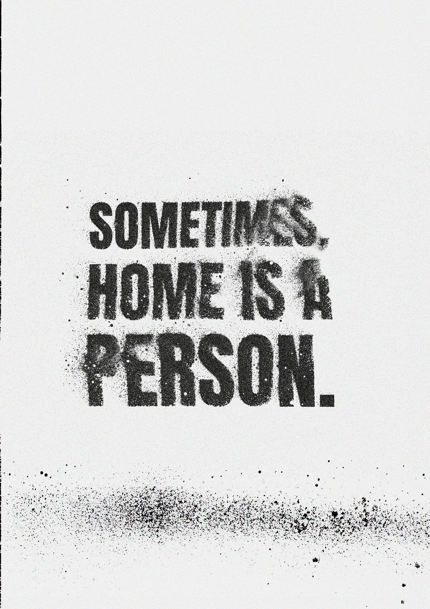
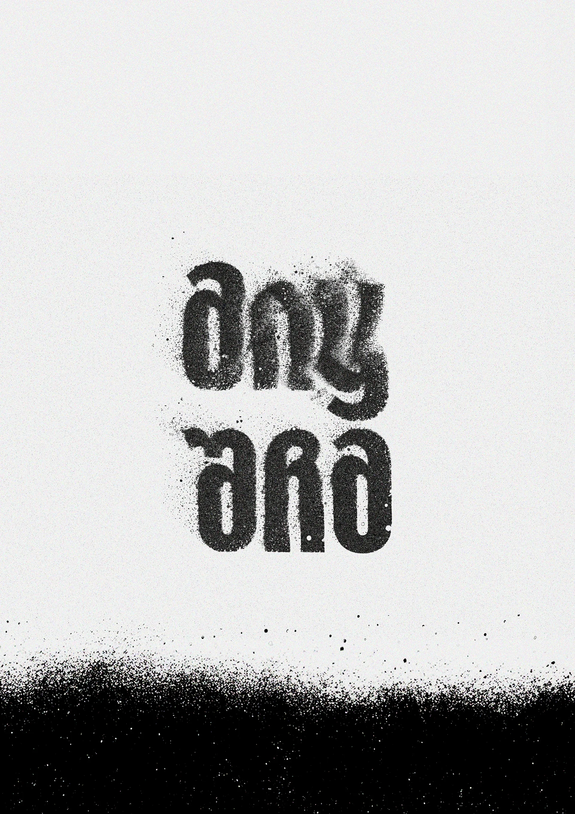
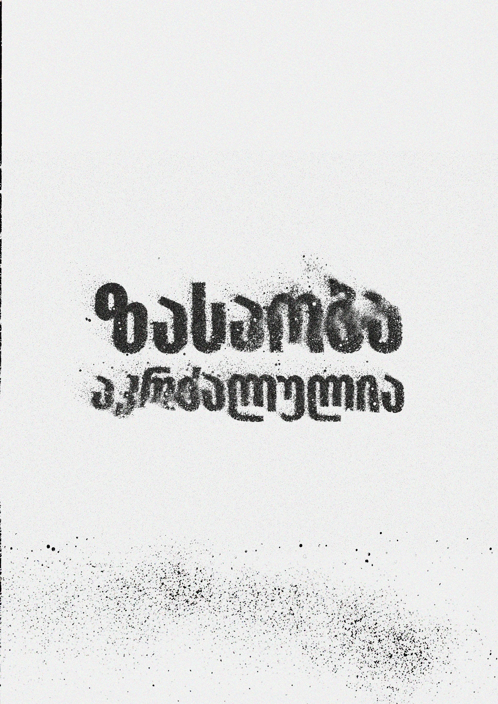
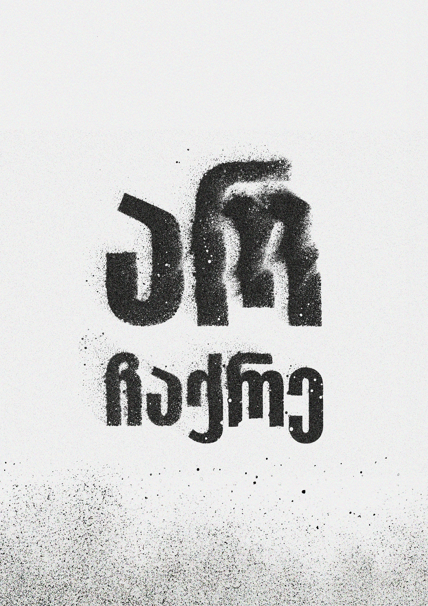

Urban Existentialism — Typographic Series
Urban Existentialism is a poster series born from the raw, ephemeral visual landscape of Tbilisi's streets. Sourced from the documentation of the Street Sentiments (ქუჩის სენტიმენტები) archive, this project translates the city’s gritty, spray-painted truths into a striking, high-contrast typographic exploration.
Tbilisi’s walls act as a communal diary - capturing the friction between local subcultures, political disillusionment, rave culture, and deeply personal, isolated thoughts. By isolating these transient murals and recontextualising them through a brutalist design framework, the series archives the fleeting voice of a generation navigating modern identity, alienation, and resistance.
Visual Identity
To mirror the physical reality of the streets, the visual language relies on a stark, monochromatic palette and uncompromising layouts. Heavy stencilling, distorted letterforms, and chaotic ink splatters evoke the velocity and urgency of late-night graffiti.
By balancing razor-sharp, structured typography with degraded, sprayed textures, the design establishes an archival aesthetic - one that feels both permanent and intensely fleeting.
Subcultural Anthems
Rebel-infused club culture manifestos like "Hate Cops, Love Techno" and the provocative, community-driven "Please Cum Together."
Geographic & Social Friction
Playful yet sharp observations on urban alienation, such as "ვაკე მაბნევს" (Vake confuses me).
Poetic Melancholy & Hope
Intimate reflections on connection and time, including "Sometimes, home is a person," "რამ გაგაბედნიერა დღეს?" (What made you happy today?), and the defiant "მოვა დრო და ეს სიძულვილი სამარცხვინო გახდება" (A time will come when this hatred becomes shameful).











